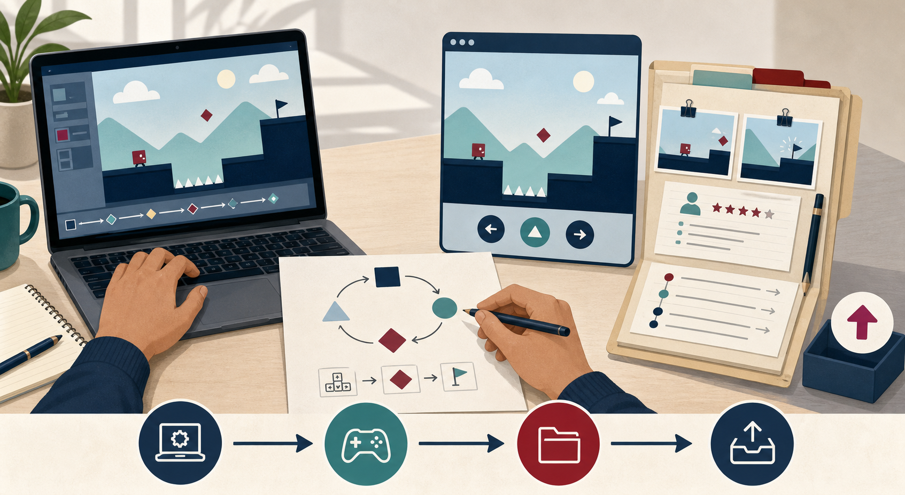
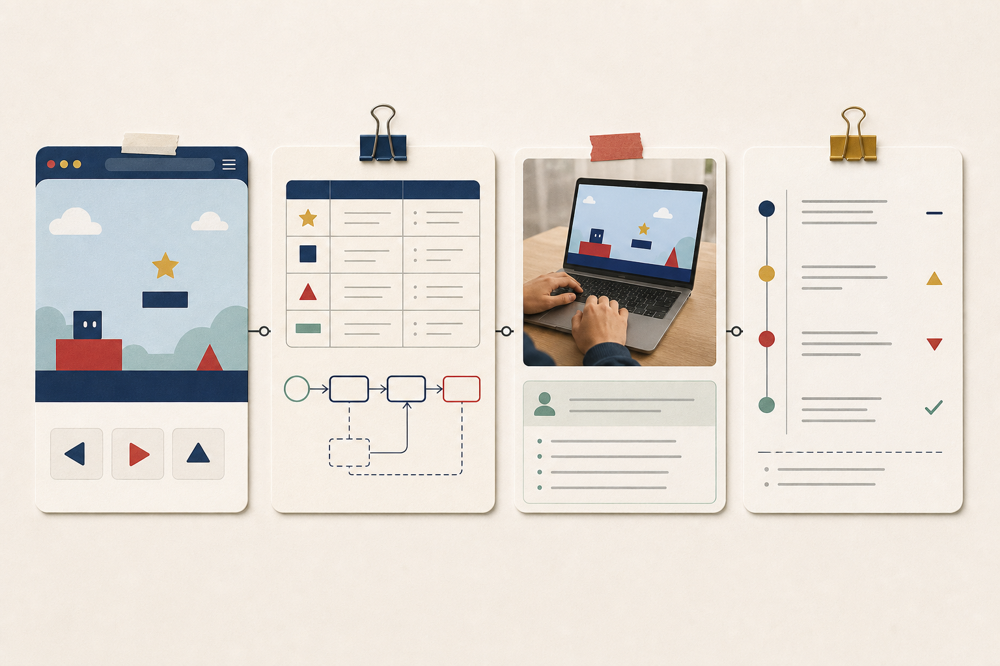

Session 08 → Session 12
From AI Studio prompt to a reviewable educational game
Use Google AI Studio Build mode for a bounded implementation slice. Use Firebase or Google Workspace only when the learning purpose requires persistence, collaboration, or instructor review. Use Playwright to verify the public artifact, not to bypass account permissions.
Open Google AI Studio ↗ · Return to the student completion guide
01 · Start with the learning claim
Write the build brief before the AI prompt.
AI Studio can generate a polished surface very quickly. Your brief prevents the surface from becoming the assessment. Copy the five fields below from D1–D3 before you open Build mode.

Learner
One learner group, one setting, one access condition.
Example: 7th-grade pairs on shared Chromebooks in a 40-minute class.Target behavior
One observable verb with a condition and a criterion.
Example: predict and revise a trajectory using mass, distance, and vector direction.Loop
Predict → act → feedback → revise. Keep the first build to five minutes.
Example: choose an angle, launch, inspect the miss, change one variable, retry.Evidence
What trace would let an instructor inspect the claim?
Example: input angle, target state, outcome, feedback viewed, and revision choice.02 · Prompt sequence
Use three prompts, not one giant “make my game” request.
Generate the smallest slice
Ask for a runnable web prototype with named states and one core decision.
Make behavior observable
Ask the agent to expose state, feedback, and learner choices without inventing outcome data.
Change one learning risk
Feed in a real observation and request one evidence-linked revision.
Prepare the submission
Ask for a file map, public preview instructions, and a provenance summary. Review every line yourself.
Copy/paste game-design prompt
Build a five-minute educational game prototype from this design brief.
Learner: 7th-grade pairs on shared Chromebooks.
Target behavior: learners predict and revise projectile trajectories using
mass, distance, and vector direction.
Loop: predict → choose angle and speed → launch → inspect feedback → revise.
Evidence to expose: chosen angle, chosen speed, target state, hit/miss,
feedback viewed, and the variable changed on the next attempt.
Requirements:
- Use a small web game with keyboard and pointer controls.
- Keep the state machine explicit: Start, Predict, Act, Feedback, Revise, End.
- Make the feedback explain the relevant variable; do not only show a score.
- Add a visible "what changed?" revision note after a miss.
- Include an accessible reset button and a text alternative for important feedback.
- Keep all learner data local to the prototype unless I explicitly request a backend.
- Use placeholder shapes and readable labels before adding visual polish.
Do not:
- claim that the game improves learning;
- invent playtest findings or learner data;
- hide the API key in client-side code;
- add accounts, leaderboards, or analytics that are not needed for this learning claim.
Return:
1. the runnable app;
2. a short file map;
3. the state/event table;
4. the exact changes I should inspect before sharing the preview.Prompt for a real revision
Observed during a labeled rehearsal: two players changed the color but
could not tell which variable controlled the trajectory. Keep the existing
learning objective. Revise only the feedback state so the changed variable,
the result, and the next actionable choice are visible. Add one test case for
the miss path. Explain which files changed and what evidence I should capture.
Do not write a claim about learning gains.03 · Optional runtime persistence
Use Firebase when the game needs a learner-owned state or event log.
Keep TeachPlay's enrollment and credential review as the authoritative course path. Add Firebase only for the game runtime when persistence is itself part of the design: resume state, a bounded event trace, or a teacher-facing replay.
Concrete use case
A learner's game stores the last five attempts and the variable changed after each miss. The instructor sees the replay only after the learner submits the packet.
Minimum data model
games/{gameId}
ownerUid
objectiveCode
publicPreviewUrl
games/{gameId}/attempts/{attemptId}
uid
state
input
outcome
feedbackViewed
changedVariable
createdAtWeb SDK shape
import { initializeApp } from "firebase/app";
import { getAuth, signInAnonymously } from "firebase/auth";
import { getFirestore, addDoc, collection, serverTimestamp } from "firebase/firestore";
const app = initializeApp(firebaseConfig); // public config only; no service-account key
const auth = getAuth(app);
const db = getFirestore(app);
await signInAnonymously(auth);
await addDoc(collection(db, "games", GAME_ID, "attempts"), {
uid: auth.currentUser.uid,
state: "feedback",
input: { angle: 32, speed: 18 },
outcome: "short",
feedbackViewed: true,
changedVariable: "angle",
createdAt: serverTimestamp()
});Starter Firestore rule
match /games/{gameId}/attempts/{attemptId} {
allow create: if request.auth != null
&& request.resource.data.uid == request.auth.uid
&& request.resource.data.keys().hasOnly([
"uid", "state", "input", "outcome",
"feedbackViewed", "changedVariable", "createdAt"
]);
allow read: if request.auth != null
&& resource.data.uid == request.auth.uid;
allow update, delete: if false;
}04 · Instructor collaboration
Use Google Workspace for review, not as a secret database.
Google Sheets, Forms, Drive, and Docs are useful when the instructor needs a shared review queue or a human-readable handoff. Prefer the narrowest OAuth scope, such as drive.file, and submit only a sanitized summary or a link to the artifact.
Example: playtest sheet
Columns: learner pseudonym, game URL, attempt count, observed breakdown, evidence link, revision decision, reviewer status. No raw student names or unconsented recordings.
Example: Drive packet
Create one folder per learner submission, share it with the instructor group, and put the README, preview URL, screenshots, recording, provenance log, and revision log inside.
Small Apps Script receiver
function doPost(e) {
const body = JSON.parse(e.postData.contents);
const safe = [
body.learnerPseudonym,
body.gameUrl,
body.observedBreakdown,
body.revisionDecision,
new Date()
];
SpreadsheetApp
.openById(PropertiesService.getScriptProperties().getProperty("REVIEW_SHEET_ID"))
.getSheetByName("Playtest review")
.appendRow(safe);
return ContentService
.createTextOutput(JSON.stringify({ ok: true }))
.setMimeType(ContentService.MimeType.JSON);
}For a production Workspace integration, deploy the receiver to the intended domain, validate the caller, keep the sheet ID in script properties, and do not accept arbitrary Drive IDs from the browser.
05 · Visual production
Use Higgsfield for purposeful visual assets, not evidence substitution.
Use Higgsfield when the game needs a short concept clip, character motion, or scene reference that helps learners communicate the intended interaction. Keep the asset prompt and license/usage note in the AI provenance log. A generated clip can illustrate a mechanic; it cannot replace a real playtest or prove a learning outcome.
Create a 10-second, 16:9 instructional game-loop reference clip.
Show one learner prediction, one visible action, a clear feedback change,
and a deliberate revision. Use abstract geometric game elements, no logos,
no student faces, no readable text, and no outcome claims. Keep the camera
steady and make the changed variable visually obvious. This clip is a
concept reference for a prototype, not a record of learner performance.06 · Verify the public artifact
Playwright checks the shared game after AI Studio, not the private editor.
After publishing or exporting the game, set GAME_URL to the public preview. The test below checks the first interaction, captures a screenshot, and fails on uncaught page errors. Add project-specific locators for the actual state machine.
import { test, expect } from "@playwright/test";
const gameUrl = process.env.GAME_URL;
test.skip(!gameUrl, "Set GAME_URL to the learner's public game preview");
test("public game exposes the learning loop", async ({ page }) => {
const errors = [];
page.on("pageerror", (error) => errors.push(error.message));
await page.goto(gameUrl, { waitUntil: "domcontentloaded" });
await expect(page.getByRole("main")).toBeVisible();
await expect(page.getByRole("button", { name: /start|begin|play/i })).toBeVisible();
await page.getByRole("button", { name: /start|begin|play/i }).click();
await expect(page.locator("[data-state]")).toHaveAttribute("data-state", /predict|act/i);
await page.screenshot({ path: "output/playwright/ai-studio-game-preview.png", fullPage: true });
expect(errors).toEqual([]);
});07 · Final handoff
Submit a packet an instructor can inspect in ten minutes.

- Live artifact: public preview URL and exported GitHub URL, if available.
- Design argument: D2 crosswalk plus the exact Google AI Studio prompts that changed the build.
- Evidence: two or three screenshots, a short captioned recording, Playwright verification result, and playtest notes.
- Governance: Firebase rules or Workspace sharing boundary, AI provenance, generated-asset note, and known limits.
- Revision: one observed trace, one decision, one changed file or game behavior, and the next test.
Open the TeachPlay submission portfolio ↗ · Instructor computational-artifact review ↗
08 · Source links
Use the provider documentation as the implementation boundary.
These links are the approved starting points for the examples above. Provider behavior, quotas, and scopes can change; record the version and date in the learner's provenance log.
- Google AI Studio Build mode — build, inspect, and revise a runnable prototype.
- AI Studio deployment guidance — publish a preview without exposing secrets.
- Firestore security rules and Firebase App Check — protect learner-owned traces.
- Google Drive API scopes and Apps Script Sheets — keep review sharing narrow and auditable.